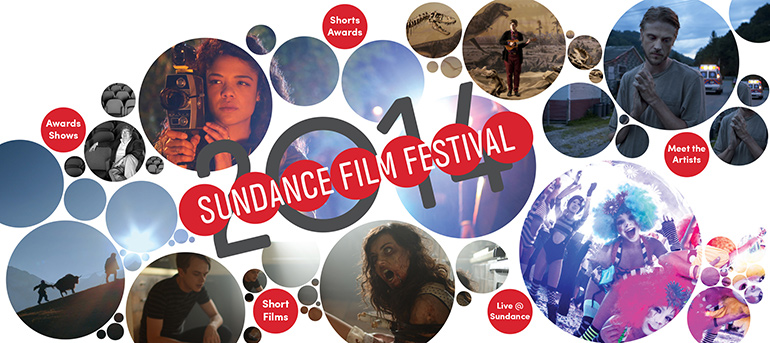

Live@Sundance

View the awards on our list of award winners.
View the past schedule of all the SFF14 live content below (live shows can still be watched!).
| January 2014 | ||||||
| Sun | Mon | Tue | Wed | Thu | Fri | Sat |
|
|
16
|
17
Live@Sundance Get a behind the scenes view of the day one festivities, and join Senior Programmer John Nein to learn about everything happening off-screen and Shorts Programmer Mike Plante talking to short filmmaker Janicza Bravo (Gregory Go Boom) |
18
Live@Sundance Film professionals give advice and answer questions |
|||
|
19
Live@Sundance Guests: Damien Chazelle Eddy Moretti Carter Smith |
20
Live@Sundance Guests: Aaron Koblin Doug Aitken Roger Ross Williams Zeresenay Berhane Lane Garrison & Filmmakers & cast |
21
Live@Sundance Guests: Cast & Directors Chris Horton Jenny Slate Filmmaker & cast Justin Simen & Tessa Thompson |
22
|
23
Live@Sundance Guests: Bird Runningwater Sydney Freeland Taika Waititi Craig Johnson |
24
Live@Sundance Guests: Brian Knappenberger Rick Perez Tabitha Jackson Todd Miller |
25
2014 Sundance Film Festival Awards Ceremony Hosted by |